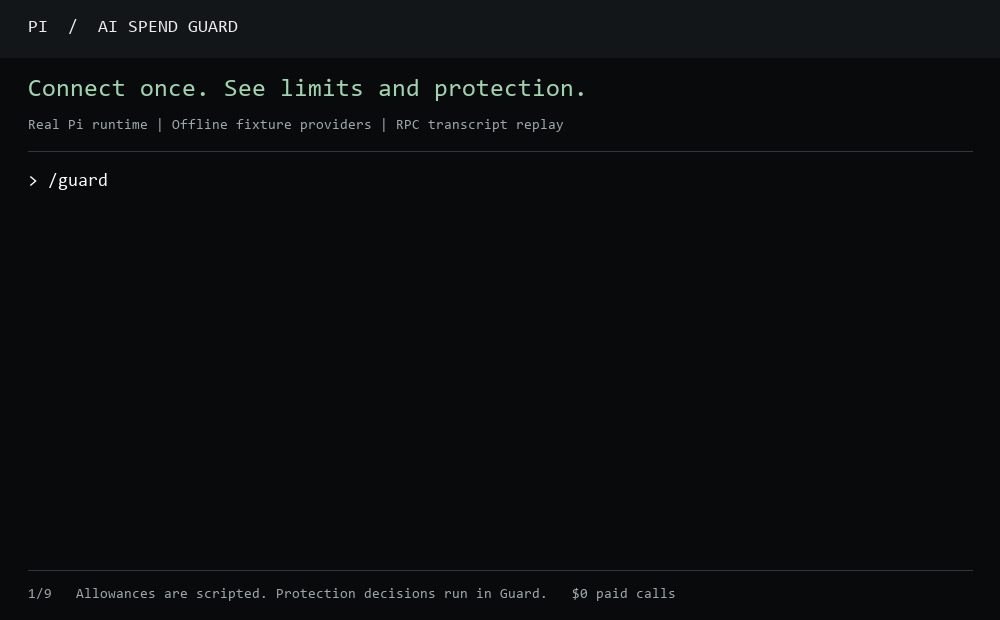

Make your allowance
last through the week.
Plan around each subscription’s reset. Keep an emergency reserve, cap long-running tasks, and pass work to a ready provider before the current one runs dry.
Loading your reset plan…
Your next request gets a budget check.
Start the local launcher, sign in to your subscriptions in Pi, then run /guard. Guard selects connected subscription models and protects each reset window. Continue working through aispend/guard.
Why these protections?
Automatic tuning only tightens work budgets. It never enables API spending, raises dollar caps, or changes a model you selected. You can turn it off under Advanced settings.
Live work & cost
ConnectingRequest counters and cost estimates update as Pi reports usage. Provider allowances refresh about every five minutes, with backoff on errors. API estimates use model prices; provider invoices and extra tool charges can differ.
What Guard saved
Waiting for evidenceSee the work Guard prevented and the context it kept out of later requests.
Show the evidence and calculation
Protection in each harness
HerdR can launch these harnesses. Protection comes from the Guard integration inside each one. Installed hooks must be enabled and trusted in the harness.
Native hook adapters are tested against their documented event contracts; live end-to-end automation is verified in Pi. Native clients do not get Pi's model routing or API dollar caps. Install instructions: integrations/native/README.md.
Usage insights — why protection changes
Local token characteristics overlap. They are useful signals, not the provider’s private quota calculation. Native Claude /usage may include information unavailable in local logs.
Upcoming resets
Shown in your local time. A new reading must confirm that an allowance has refreshed.
Allowance connections
Claude uses the local CLI login, Codex uses its account API, and Antigravity runs its built-in /usage report. These checks do not call a model. Each card shows the last successful check.
Enter a reading manually
A plan’s dollar price does not imply a fixed token allowance. Missing readings remain unknown; passing a reset time does not refill the meter automatically.
Advanced settings — optional
Defaults work immediately. Override them for a particular workflow.
Applied before requests made through the Guard model. An in-flight request can exceed a task token budget. Work in other agents is visible only through quota readings.
Test the reset logic
An isolated scenario: Claude is consuming its allowance too quickly; Codex has room. This does not change your readings or rules.
Connect Pi
- Start the local controller with
npm run guard. - Install the extension using
integrations/pi/README.md. - Sign in to each provider in Pi, then run
/guard. Models are selected automatically. - Guard activates
aispend/guard. Every routed request checks these rules.
Reading an allowance and connecting a Pi model are separate. Antigravity monitoring works through agy; routing needs a compatible Pi subscription connector. API fallback requires explicit dollar caps. Radius is a separate gateway, not a transfer of your plan allowances.
See Guard make a decision
The real Pi runtime, with offline fixture providers and scripted allowance readings. No subscription or API credits are spent in this recording.
Open the Pi walkthrough GIFPlay the walkthrough

/guard activates protection and shows balances, resets, and measured impact.
/guard-handoff writes bounded local notes without a model call.
/guard-new opens a fresh session from those notes and keeps the old one.
/guard-import path/to/handoff.md starts from another agent’s notes.
Guard compacts at its context ceiling; it does not silently clear your work. Fresh sessions are explicit. Handoffs are bounded excerpts, so review unfinished checks before continuing.
Guarded tasks
Task IDs are hashed. The dashboard receives counters and decisions, not prompts, tool output, credentials, or repository paths. Renewing a task budget is a deliberate local action; it does not refill a provider allowance.